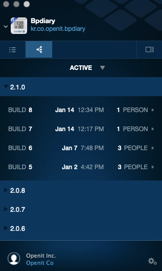

iOS fastlane - Fabric, Firebase
iOS fastlane - Fabric, Firebase
이번 프로젝트에서 CI/CD 툴로 fastlane을 적용하려 한다. 이미 상용에 출시된 지 오랜 시간이 지났고 몸집이 점점 커져 today extension (widget) 도 추가되고 리소스도 많아져 아카이빙에 오랜 시간이 걸리고 있다. 그리고 기존에 아무 생각 없이 인증서를 그저 오토 사이닝으로 개발을 진행해도 문제가 없었지만, 이제 app, noti extension, today extension 3개의 프로젝트를 개발, 배포 인증서로 관리해야 해 애플 개발자 페이지가 너무 번잡스러워졌다.
이번 포스트에서는 fastlane을 통한 베타 배포를 적용하는 과정을 기록하려 한다.
fastlane 홈페이지에 나와있는 핵심 기능은 다음과 같다.
- Capture screenshots automatically
- Distribute beta builds
- Publish your app with the push of a button
- Automatic code signing for iOS
첫번째 테스트와 스크린샷 기능을 제외하고 베타 빌드와 스토어 업로드 기능을 사용해 CI / CD 도입하려 한다. 기존에도 fabric을 통한 beta 배포는 진행하고 있었지만, xCode에서 아카이빙을 하고 fabric앱을 이용해 배포하고 있었다.

Xcode에서 인증서를 설정하고 아카이빙 후 fabric앱을 통해 배포하는 일련의 과정을 통해서 beta 배포를 진행했는데, 앞서 말한 것처럼 이제 이런 행위를 하는데 너무 복잡해졌고 신경 써야 할 일이 많다. fastlane은 이제는 많이 알려져 콘퍼런스에도 자주 등장하고 블로그에도 많이 소개되어있다. 예전에도 도입을 건의했는데 받아들여지지 않았다. 기존에 사람이 할 수 있는 일이라 새로운 기술을 도입하는데 소극적인 태도를 보였었다. fastlane에 대해서 인터넷에 찾아보면 소개하는 블로그나 튜토리얼 정도를 진행하는 블로그는 많이 있지만 진짜로 현업에서 쓰는 내용에 대해서는 한국어 블로그에는 거의 없다. 나와 같은 이유일 거 같다.
beta로 아카이빙 후 fabric을 통해서 배포하는 것까지 진행해 보려 한다.
fastlane을 설치하는 부분 까지는 공식 홈페이지를 따라서 진행하면 된다. 공식 홈페이지에 잘 나와 있기 때문에 항상 fastlane을 수정할 때에는 옆에 같이 띄워 놓고 본다.
사용자 정보
fastlane에 사용될 사용자 기본 정보를 저장하기 위해서 appfile을 작성해야 한다.
이번에 beta 배포를 위해서 입력한 정보는 다음과 같다.
app_identifier 'kr.co.juvis.dietapp'
apple_id 'jglee@openit.co.kr'
apple_dev_portal_id 'jglee@openit.co.kr'
team_id '5WFR4QS43Z'
이 정보를 기반으로 하단에 표시하는 인증서 인증서 관리 사이닝 등 작업을 진행하며 앱 스토어 배포나 테스트 플라이트의 경우 추가적인 정보가 필요하다.
인증서 관리
먼저 인증서 (certificate)를 다운 받는 것 부터 시작한다. 인증서 관리는 auto로 사용해도 상관 없다. 필자로 평상시 xcode에서 아카이빙하거나 런할 때 auto로 맞춰놓고 사용했었다. 그런데 이 프로젝트에서는 노티 서비스랑 위젯이 붙어 있어서 auto로 하고 앱을 빌드하면 프로파일을 찾지 못하는 문제가 발생했다.
그래서 build_app에서 인증서를 지정 해줘야 한다. 아래 코드는 build_app 에 들어가는 옵션 부분이다.
provisioningProfiles: {
method: "development",
"kr.co.juvis.dietapp" => "dietapp_dev.mobileprovision",
"kr.co.juvis.dietapp.notificationServiceExt" => "notificationServiceExt_dev.mobileprovision",
"kr.co.juvis.dietapp.JuvisWidget" => "JuvisWidget_dev.mobileprovision"
}
다시 인증서 부분으로 돌아와서 앞서 appfile에 저장한 내 정보를 사용해 cert를 꺼내 온다. 이때 만약 이중 인증이 되어있는 경우 핀 번호를 요구한다.
# 인증서 설정
get_certificates(
development: true,
output_path: "./fastlane/certificate/"
)
내용을 보면 알겠지만 dev cert만 꺼내서 ./fastlane/certificate/ 경로에 저장하도록 한다. development를 true로 주면 개발용 인증서를 가져온다. 우리는 fabric beta 배포를 진행할 예정이니 dev 인증서를 꺼낸다.
그리고 이제 그 cert를 기반으로 profile을 찾아야 한다. 프로필을 꺼내는 action은 get_provisioning_profile이다.
근데 앞서 말한 것 처럼 3개의 프로파일이 필요하다. 프로파일을 꺼내서 해당 이름으로 저장한다.
- dietapp - dietapp_dev.mobileprovision
- notificationService - notificationServiceExt_dev.mobileprovision
- Widget - JuvisWidget_dev.mobileprovision
get_provisioning_profile(
development: true,
app_identifier: "kr.co.juvis.dietapp",
filename: "dietapp_dev.mobileprovision",
output_path: "./fastlane/profiles/"
)
# noti service profile
get_provisioning_profile(
development: true,
app_identifier: "kr.co.juvis.dietapp.notificationServiceExt",
filename: "notificationServiceExt_dev.mobileprovision",
output_path: "./fastlane/profiles/"
)
# widget profile
get_provisioning_profile(
development: true,
app_identifier: "kr.co.juvis.dietapp.JuvisWidget",
filename: "JuvisWidget_dev.mobileprovision",
output_path: "./fastlane/profiles/"
)
development 옵션으로 개발용 프로파일을 꺼낸다고 명시하고 해당 id에 맞는 프로파일을 찾는다. 파일 이름과 경로를 지정하는 이유는 앞서 언급한 것 처럼 3개의 프로파일을 다 지정해서 아키이빙해야 하기 때문이다.
빌드
예제나 샘플을 보면 이제 바로 빌드를 들어간다. 근데 우리는 여기서 다시 한번 sigh 액션을 사용해 무엇으로 인증하는지 다시 지정하겠다.
sigh(
development: true,
)
만약, 여기서 sigh으로 dev 프로파일을 사용하는 것을 지정하지 않으면 가끔 오류가 발생한다. 해결법을 찾아보니 이렇게 개발용을 사용하는 것을 지정하라고 한다.
이제 build_app 액션을 뜯어보자.
build_app(
configuration: "Debug", # use debug Scheme
scheme: "JuvisApp",
workspace: "JuvisApp.xcworkspace",
clean: true,
silent: true,
output_directory: "fastlane/ipa/",
output_name: "JuvisApp.ipa",
export_method: "development",
xcargs: "-UseModernBuildSystem=NO", # use legacy build system
export_options: {
provisioningProfiles: {
method: "development",
"kr.co.juvis.dietapp" => "dietapp_dev.mobileprovision",
"kr.co.juvis.dietapp.notificationServiceExt" => "notificationServiceExt_dev.mobileprovision",
"kr.co.juvis.dietapp.JuvisWidget" => "JuvisWidget_dev.mobileprovision"
}
}
)
먼저 앱의 configuration을 debug로 한다. 우리 앱에서는 config에 따라서 몇가지 설정을 변경하고 있다. 다른 설정은 거의 샘플에 나와있는 설정과 비슷한데 여기서 주목해야 할 부분이 export_options 이다. 이 부분을 위해서 앞에서부터 인증서를 찾고 프로파일을 저장하는 동작을 했다.
xcargs 옵션은 xcode build 시스템에 특정 파라미터를 전달하는 용도로 쓰인다. 여기서는 위젯을 포함해서 아카이빙하는데 문제가 발생해 워크 스페이스 세팅에 legacy build system을 사용해야 한다.
legacy build system을 사용하기 위한 옵션이 -UseModernBuildSystem=NO이다.
Beta
여기까지 진행하면 ipa 파일이 생성된다. 이제 이 ipa 파일을 fabric 배포를 통해서 내보내면 된다. 만약, 앞선 설정에서 문제가 있었다면 ipa 파일은 생성되었지만 배포가 실패하는 경우가 굉장히 많다. 그리고 대부분의 경우 이 실패 메세지가 표시되지 않아서 정말 고생을 많이 했었다.
crashlytics(
emails: "jglee@openit.co.kr",
notifications: true,
crashlytics_path: "./Pods/Crashlytics/submit",
api_token: INPUT_API_TOKEN,
build_secret: INPUT_BUILD_SECRET,
ipa_path: "./fastlane/ipa/JuvisApp.ipa",
)
개인 설정은 문서를 보면 어디서 찾을 수 있는지 확인할 수 있다.
여기에 테스트 그룹을 지정할 수 있고 사용자의 email을 지정할 수 있다. 여기서는 테스트 용도로 내 이메일만 지정 해놨다.
Firebase Beta
근데 fabric이 2020년 3월 31일 이후로 내려간다고 한다. 완전히 firebase에 통합되는 모양이다. 그래서 앞서 설명한 부분을 기반으로 배포만 firebase를 통한 beta deploy로 변경하려 한다.
아래 공식 링크에 잘 나와 있는데, 이를 기반으로 변경해보자.
| [Distribute iOS apps to testers using fastlane | Firebase](https://firebase.google.com/docs/app-distribution/ios/distribute-fastlane) |
먼저 플러그인을 설치한다.
fastlane add_plugin firebase_app_distribution
수정한 내용은 다음과 같다.
# firebase deploy
# https://firebase.google.com/docs/app-distribution/ios/distribute-fastlane
# fastlane add_plugin firebase_app_distribution -> 플러그인 설치
firebase_app_distribution(
app: FIREBASE_APP_ID, # firebase app id
testers: "jglee@openit.co.kr",
ipa_path: "./fastlane/ipa/JuvisApp.ipa"
)